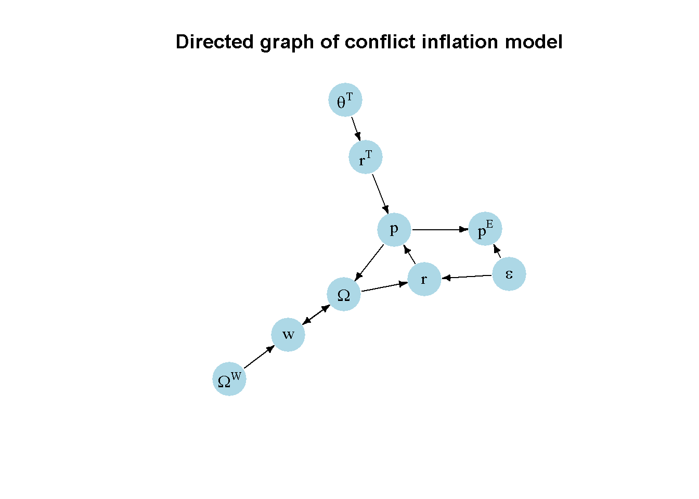

#Clear the environment
rm(list=ls(all=TRUE))
#Set number of periods
Q = 300
# Set number of scenarios (including baselines)
S=4
# Set period in which exogenous shift will occur
q=50
#Create (S x Q) matrices in which equilibrium solutions from different parameterisations will be stored
omega=matrix(data=0.5, nrow=S, ncol=Q) # real wage
w=matrix(data=0.1, nrow=S, ncol=Q) # nominal wage
p=matrix(data=0.5, nrow=S, ncol=Q) # price level
w_hat=matrix(data=0.1, nrow=S, ncol=Q) # growth rate of nominal wages
p_hat=matrix(data=0.1, nrow=S, ncol=Q) # growth rate of prices = inflation rate
p_T=matrix(data=0.5, nrow=S, ncol=Q) # firms' desired price level
omega_f=matrix(data=0.5, nrow=S, ncol=Q) # firms' desired real wage
p_E=matrix(data=0.5, nrow=S, ncol=Q) # nominal energy price
r_T=matrix(data=0.5, nrow=S, ncol=Q) # target profit margin
r=matrix(data=0.5, nrow=S, ncol=Q) # realised profit margin
# Set constant parameter values
phi=1 # adjustment speed of nominal wages
psi=1 # adjustment speed of prices
delta=1 # energy intensity
# Set and initialise exogenous variables/parameters that will be shifted
epsilon=matrix(data=0.55, nrow=S, ncol=Q) # real energy price
theta_T=matrix(data=0.4, nrow=S, ncol=Q) # target markup
omega_w=matrix(data=0.2, nrow=S, ncol=Q) # target real wage of workers
# Set parameter values for different scenarios
epsilon[2,q:Q]=0.8 # scenario 2: rise in real energy price
theta_T[3,q:Q]=0.6 # scenario 3: rise in target markup
omega_w[4,q:Q]=0.3 # scenario 4: rise in target real wage of workers
# Simulate the model by looping over Q time periods for S different scenarios
for (i in 1:S){
for (t in 2:Q){
for (iterations in 1:1000){ # iterate the model 1000-times in each period
#(1) Real wage
omega[i,t] =w[i,t]/p[i,t]
#(2) Nominal wage
w[i,t] = w[i,t-1]*(1 + phi*(omega_w[i,t-1] - omega[i,t-1]))
#(3) Price level
p[i,t] = p[i, t-1]*(1 + psi*(r_T[i, t-1] - r[i, t-1]))
#(4) Firms' desired real wage
omega_f[i,t] = w[i,t]/p_T[i,t]
#(5) Firms' desired price level
p_T[i,t] = (1 + theta_T[i,t])*(w[i,t] + delta * p_E[i,t])
#(6) Nominal energy price
p_E[i,t]=epsilon[i,t]*p[i,t]
# Target profit margin
r_T[i, t-1] = theta_T[i, t]/(1 + theta_T[i, t])
# Realised profit margin
r[i, t] = 1 - omega[i, t] - epsilon[i,t]*delta
# Growth rate of nominal wages
w_hat[i,t]= (w[i,t]- w[i,t-1])/w[i,t-1]
# Growth rate of prices = inflation rate
p_hat[i,t]= (p[i,t]- p[i,t-1])/p[i,t-1]
} # close iterations loop
} # close time loop
} # close scenarios loop11 A Conflict Inflation Model
Overview
This model is a version of the conflicting-claims approach to inflation that has been developed in the Marxian and post-Keynesian tradition (Rowthorn (1977)).1 The conflict inflation approach argues that inflation is driven by distributional conflict between price-setting firms and wage-setting workers. Each social class aspires a share of real income that is inconsistent with the claims of the other class. Workers gradually adjust nominal wages to reach a real wage target. Firms, by contrast, gradually adjust prices to achieve an implicit real wage target. The (implicit) real wage target of firms may stem from an (explicit) profitability target. Profitability, in turn, depends on the unit cost of firms. With nominal wages being a key component of those unit cost, any attempt by workers to raise real wages through higher nominal wages will eat into firms’ profitability, which will respond by raising prices. Equally, any attempt by firms to raise profitability by setting higher prices will undermine real wages and evoke a response by workers. This interplay between mutually inconsistent claims drives the inflationary process and the equilibrium real wage. Distributional outcomes in this model depend on the distributional targets of workers and firms as well as their ability to adjust wages and prices, which in turn may be affected by their relative bargaining power and labour market institutions.
We present a simplified version of the three-sector conflict inflation model in Wildauer et al. (2023) that examines the inflationary and distributional effects of energy price shocks.2 A final output sector uses energy as an intermediate input. Exogenous shocks to the prices of energy inputs can trigger temporary ‘price-wage spirals’, where firms raise prices to defend their profit margins, which in turn induces workers to raise nominal wages, which prolongs the inflationary shocks. While real wages fall, the economy-wide profit share rises.
The Model
The model is given by the following equations:
\[ \Omega_t = \frac{w_t}{p_t} \tag{11.1}\] \[ w_{t} = w_{t-1}\left[ 1 + \phi(\Omega^W - \Omega_{t-1}) \right] \tag{11.2}\]
\[ p_t= p_{t-1} \left[ 1 + \psi (r^T - r_{t-1}) \right] \tag{11.3}\]
\[ p^T_t=(1+\theta^T)\left(w_t + \delta p_t^E\right) \tag{11.4}\]
\[ r^T=\frac{\theta^T}{1+\theta^T} \tag{11.5}\]
\[ r_t=1-\Omega_t - \delta \epsilon \tag{11.6}\] \[ p^E_t = \epsilon p_t \tag{11.7}\]
where \(\Omega\), \(w\), \(p\), \(\Omega^W\), \(r^T\), \(r\), \(p^T\), and \(p^E\) are the real wage, the nominal wage, the price level, workers’ desired real wage, firms’ desired profit margin, the realised profit margin, firms’ desired price level, and the nominal energy price, respectively.
Equation 11.1 defines the real wage \(\Omega\). Equation 11.2 specifies the dynamics of wage setting. Workers set the growth rate of nominal wages proportionally to the gap between their target real wage \(\Omega^W\) and the actual real wage \(\Omega\).3 The target real wage of workers is taken to be exogenous in this version of the model.4 By Equation 11.3, firms set the price inflation rate in a symmetric manner, responding to the deviation of the desired profit margin \(r^T\) from the actual profit margin \(r\). Equation 11.4 specifies the desired price level of firms, which charge a desired markup \(\theta^T\) on their unit variable cost. Unit costs in this model consist of two components: (i) unit labour cost given by \(w_t\) (where we normalise labour productivity to unity for simplicity such that \(\frac{Y}{L}=1\)), and (ii) unit energy cost \(\delta p^E\), where \(\delta =\frac{E}{Y}\) is the (exogenous) energy intensity and \(p^E\) is the nominal energy price. The profit margin is defined as profits over gross output: \(r=\frac{\Pi}{pY}=\frac{pY-wL-p^E E}{pY}\). The target profit margin as implied by the desired price level is then \(r^T = \frac{p^T - (w_t + \delta p^E) }{p^T}\), yielding Equation 11.5. The desired markup \(\theta^T\) is considered exogenous in this version of the model.5 The actual or realised profit margin is given by Equation 11.6, where \(\epsilon=\frac{p^E}{p}\) is the real energy price. Finally, by Equation 11.7, the real energy price \(\epsilon\) is taken to be exogenous (and subject to shocks), implying that the nominal energy price must grow at the same rate as the price level.
Simulation
Parameterisation
Table 1 reports the parameterisation used in the simulation. Besides a baseline (labelled as scenario 1), three further scenarios will be considered. In scenario 2, the real energy price \(\epsilon\) increases. In scenario 3, the target markup \(\theta^T\) rises. In scenario 4, the target real wage \(\Omega^W\) rises.
Table 1: Parameterisation
| Scenario | \(\phi\) | \(\psi\) | \(\delta\) | \(\epsilon\) | \(\theta^T\) | \(\Omega^W\) |
|---|---|---|---|---|---|---|
| 1: baseline | 1 | 1 | 1 | 0.55 | 0.4 | 0.2 |
| 2: rise in real energy price \((\epsilon)\) | 1 | 1 | 1 | 0.8 | 0.4 | 0.2 |
| 3: rise in target markup \((\theta^T)\) | 1 | 1 | 1 | 0.55 | 0.6 | 0.2 |
| 4: rise in target real wage \((\Omega^W)\) | 1 | 1 | 1 | 0.55 | 0.4 | 0.3 |
Simulation code
Python code
import numpy as np
# Set number of periods
Q = 300
# Set number of scenarios (including baseline)
S = 4
# Set period in which exogenous shift will occur
q = 50
# Create (S x Q) matrices in which equilibrium solutions from different parameterizations will be stored
omega = np.full((S, Q), 0.5) # real wage
w = np.full((S, Q), 0.1) # nominal wage
p = np.full((S, Q), 0.5) # price level
w_hat = np.full((S, Q), 0.1) # growth rate of nominal wages
p_hat = np.full((S, Q), 0.1) # growth rate of prices = inflation rate
p_T = np.full((S, Q), 0.5) # firms' desired price level
omega_f = np.full((S, Q), 0.5) # firms' desired real wage
p_E = np.full((S, Q), 0.5) # nominal energy price
r_T = np.full((S, Q), 0.5) # target profit margin
r = np.full((S, Q), 0.5) # realised profit margin
# Set constant parameter values
phi = 1 # adjustment speed of nominal wages
psi = 1 # adjustment speed of prices
delta = 1 # energy intensity
# Set and initialize exogenous variables/parameters that will be shifted
epsilon = np.full((S, Q), 0.55) # real energy price
theta_T = np.full((S, Q), 0.4) # target markup
omega_w = np.full((S, Q), 0.2) # target real wage of workers
# Set parameter values for different scenarios
epsilon[1, q:Q] = 0.8 # scenario 2: rise in real energy price
theta_T[2, q:Q] = 0.6 # scenario 3: rise in target markup
omega_w[3, q:Q] = 0.3 # scenario 4: rise in target real wage of workers
# Simulate the model by looping over Q time periods for S different scenarios
for i in range(S):
for t in range(1, Q):
for _ in range(1000): # iterate the model 1000-times in each period
# (1) Real wage
omega[i, t] = w[i, t] / p[i, t]
# (2) Nominal wage
w[i, t] = w[i, t-1] * (1 + phi * (omega_w[i, t-1] - omega[i, t-1]))
# (3) Price level
p[i, t] = p[i, t-1] * (1 + psi * (r_T[i, t-1] - r[i, t-1]))
# (4) Firms' desired real wage
omega_f[i, t] = w[i, t] / p_T[i, t]
# (5) Firms' desired price level
p_T[i, t] = (1 + theta_T[i, t]) * (w[i, t] + delta * p_E[i, t])
# (6) Nominal energy price
p_E[i, t] = epsilon[i, t] * p[i, t]
# Target profit margin
r_T[i, t-1] = theta_T[i, t] / (1 + theta_T[i, t])
# Realised profit margin
r[i, t] = 1 - omega[i, t] - epsilon[i, t] * delta
# Growth rate of nominal wages
w_hat[i, t] = (w[i, t] - w[i, t-1]) / w[i, t-1]
# Growth rate of prices = inflation rate
p_hat[i, t] = (p[i, t] - p[i, t-1]) / p[i, t-1]
Plots
Figure 11.1 displays the dynamics of nominal wages and prices (in levels), both of which exhibit exponential growth. Figure 11.2 plots the corresponding growth rates: the price and wage inflation rates. It can be seen that after an initial adjustment period, both rates converge on the same value, implying a constant real wage (and a constant profit margin).
# Set start and end periods for plots
Tmin =3
Tmax=300
# Prices and wages (baseline)
plot(p[1, Tmin:Tmax],type="l", col=1, lwd=2, lty=1, xlab="Time", ylab="p, w")
title(main="Prices and wages (baseline)", cex=0.8)
lines(w[1, Tmin:Tmax],lty=2)
legend("topleft", legend=c("p", "w"),
lty=1:2, cex=0.8, bty = "n", y.intersp=0.8)# Set start and end periods for plots
Tmin =3
Tmax=60
# Price and wage inflation (in %) (baseline)
plot(100*p_hat[1, Tmin:Tmax],type="l", col=1, lwd=2, lty=1, xlab="Time", ylab="%", ylim=range(100*p_hat[1, Tmin:Tmax], 100*w_hat[1, Tmin:Tmax]))
title(main="Price and wage inflation (baseline)", cex=0.8)
lines(100*w_hat[1, Tmin:Tmax],lty=2)
legend("topright", legend=c(expression(hat(p)), expression(hat(w))),
lty=1:2, cex=0.8, bty = "n", y.intersp=0.8)Figure 11.3 displays the energy price shock (scenario 2), where the real energy price rises permanently.6 As a result, there is a bout in the inflation rate, followed by an increase in the wage inflation rate. This reaction may be characterised as a (temporary) ‘price-wage spiral’ (Wildauer et al. (2023)), where firms react to the cost shock by raising prices to protect their profit margins, which trigger a response by workers to defend their real wages, which prolongs the inflationary shock. However, the inflation rate then embarks on a gradual downward convergence towards a new equilibrium that is higher than the one before the shock. Since the price inflation rate exceeds the wage inflation rate during the adjustment process, the real wage falls in response to the increase in the real energy price.
# Set start and end periods for plots
Tmin =10
Tmax=100
# Inflation and real wage in energy price shock scenario
plot(100*p_hat[2, Tmin:Tmax], type="l", col=1, lwd=2, lty=1, xlab="Time", ylab=expression(hat(p)))
title(main="Wage and price inflation and real wage, energy price shock (scen. 2)", cex=0.8)
lines(100*w_hat[2, Tmin:Tmax],lty=2, lwd=2)
mtext(expression(hat(w)), side = 2, line = 3, at=12)
par(mar = c(5, 4, 4, 4) + 0.3)
par(new = TRUE)
plot(omega[2, Tmin:Tmax], type="l", col=1, lwd=2, lty=3, font.main=1, cex.main=1,ylab = '', axes=FALSE,
xlab = '', ylim = range(omega[2, Tmin:Tmax]), cex=0.8)
axis(side = 4, at=pretty(omega[2, Tmin:Tmax]))
mtext(expression(Omega), side = 4, line = 3)
legend("topright", legend=c(expression(hat(p)),expression(hat(w)), expression(Omega)),
lty=1:3, cex=0.8, bty = "n", y.intersp=0.8)Figure 11.4 considers the scenario where the target markup of firms rises. The resulting dynamics are very similar to the energy price shock: the inflation rate spikes, triggering a response in nominal wages that is weaker than the increase in inflation. As a result, the real wage falls until a new equilibrium with a higher inflation rate has been reached. In contrast to the energy price shock, both the profit margin and the profit share must increase in this scenario.
# Set start and end periods for plots
Tmin =30
Tmax=80
# Inflation and real wage in scenario 3
plot(100*p_hat[3, Tmin:Tmax], type="l", col=1, lwd=2, lty=1, xlab="Time", ylab=expression(hat(p)))
title(main="Price and wage inflation and real wage, rise in target markup (scen. 3)", cex=0.8)
lines(100*w_hat[3, Tmin:Tmax],lty=2, lwd=2)
mtext(expression(hat(w)), side = 2, line = 3, at=7)
par(mar = c(5, 4, 4, 4) + 0.3)
par(new = TRUE)
plot(omega[3, Tmin:Tmax], type="l", col=1, lwd=2, lty=3, font.main=1, cex.main=1,ylab = '', axes=FALSE,
xlab = '', ylim = range(omega[3, Tmin:Tmax]), cex=0.8)
axis(side = 4, at=pretty(omega[3, Tmin:Tmax]))
mtext(expression(Omega), side = 4, line = 3)
legend("topright", legend=c(expression(hat(p)),expression(hat(w)), expression(Omega)),
lty=1:3, cex=0.8, bty = "n", y.intersp=0.8)Figure 11.5 displays scenario 4, where the target real wage of workers rises. The wage inflation rate shoots up, which is followed by an increase in price inflation. As nominal wages temporarily grow faster than prices, the real wage increases. By implication, both profit share and margin will fall.
Taken together, scenarios 3 and 4 illustrate that besides cost shocks, exogeneous changes in the price- and wage-setting behaviour of firm and workers, respectively, will change the equilibrium inflation rate as well as income distribution. Such changes could stem from increases in market power (scenario 3) or fiercer industrial action by workers (scenario 4). An increase of the claim of either party on total real output will result in elevated social conflict, reflected in an increase in the inflation rate. The resulting distributional effect will depend on which party initiates the conflict.
# Inflation and real wage in scenario 4
plot(100*p_hat[4, Tmin:Tmax], type="l", col=1, lwd=2, lty=1, xlab="Time", ylab=expression(hat(p)), ylim=range(100*p_hat[4, Tmin:Tmax], 100*w_hat[4, Tmin:Tmax]))
title(main="Price and wage inflation real wage, rise in target real wage (scen. 4)", cex=0.8)
lines(100*w_hat[4, Tmin:Tmax],lty=2, lwd=2)
mtext(expression(hat(w)), side = 2, line = 3, at=7.5)
par(mar = c(5, 4, 4, 4) + 0.3)
par(new = TRUE)
plot(omega[4, Tmin:Tmax], type="l", col=1, lwd=2, lty=3, font.main=1, cex.main=1,ylab = '', axes=FALSE,
xlab = '', ylim = range(omega[4, Tmin:Tmax]), cex=0.8)
axis(side = 4, at=pretty(omega[4, Tmin:Tmax]))
mtext(expression(Omega), side = 4, line = 3)
legend("topright", legend=c(expression(hat(p)),expression(hat(w)), expression(Omega)),
lty=1:3, cex=0.8, bty = "n", y.intersp=0.8)
Python code
## Plot (here only inflation in scenario 2)
import matplotlib.pyplot as plt
# Set start and end periods for plots
Tmin = 9 # Zero-based index (equivalent to Tmin=10 in R)
Tmax = 100
# Set up the main plot
fig, ax1 = plt.subplots()
# Plot inflation rates (price and wage growth rates) on the primary y-axis
ax1.plot(100 * p_hat[1, Tmin:Tmax], label=r'$\hat{p}$', color="black", linewidth=2, linestyle="-") # price inflation
ax1.plot(100 * w_hat[1, Tmin:Tmax], label=r'$\hat{w}$', color="black", linewidth=2, linestyle="--") # wage inflation
ax1.set_xlabel("Time")
ax1.set_ylabel(r'$\hat{p}$, $\hat{w}$')
ax1.set_ylim(0, 30) # Adjust this limit as needed based on your data
# Add secondary y-axis for real wage
ax2 = ax1.twinx()
ax2.plot(omega[1, Tmin:Tmax], label=r'$\Omega$', color="black", linewidth=2, linestyle=":") # real wage
ax2.set_ylabel(r'$\Omega$')
ax2.set_ylim(0, 0.2) # Set range based on omega values
# Titles and legends
plt.title("Wage and price inflation and real wage, energy price shock (scenario 2)", fontsize=10)
ax1.legend(loc="upper left", frameon=False, fontsize=8)
ax2.legend(loc="upper right", frameon=False, fontsize=8)
plt.show()A closer look at the effect of energy price shocks on profits
The model can be used to study the effects of an energy price shock on different measures of profitability and income distribution. Table 2 provides an overview of these measures.
Table 2: Measures of profits
| Definition | Model equation | Effect of energy price shock7 \((\uparrow \epsilon)\) | |
|---|---|---|---|
| Profit margin = profit share of energy sector | \[ r^E = \pi^E = \frac{\Pi^E}{p^E E} \] | \[ r^E = \frac{p^E E - w^E L^E}{p^E E} = 1 - \frac{\Omega^E}{\epsilon} \] | Positive |
| Profit margin of final output sector | \[ r = \frac{\Pi}{pY} \] | \[ r = \frac{pY - wL - p^E E}{pY} = 1 - \Omega - \delta \epsilon \] | Negative |
| Profit share of final output sector | \[ \pi = \frac{\Pi}{pVA} \] | \[ \pi = \frac{pY - wL - p^E E}{pY - p^E E} = 1 - \frac{\Omega}{1 - p^E \epsilon} \] | Ambiguous |
| Total profit share | \[ \pi^{Total} = \frac{\Pi + \Pi^E}{pY} \] | \[ \pi^{Total} = \frac{pY - w^E L^E - wL}{pY} = 1 - \delta \Omega^E - \Omega \] | Positive |
Note: \(\Pi\) represents nominal profits, \(E\) is the output of the energy sector, which is an input to the final output \(Y\). The real wage of the energy sector \(\Omega^E = w^E/p\) is exogenous. Labour productivity in both sectors is normalised to unity: \(L^E / E = L / Y = 1\). \(VA\) is value added.
The profit margin \(r\) is defined as the share of profits in gross output. By contrast, the profit share \(\pi\) is defined as the share of profits in value added, i.e. output net of intermediate inputs. For the energy sector, which in this model does not use any intermediate inputs, the profit margin and profit share coincide. With the real wage in the energy sector assumed exogenous, a real energy price increase will unambiguously raise the profits of the energy sector. For the final output sector that uses energy as an input, an energy price shock will lower the profit margin due to the increase in energy cost. However, the effect on the final output sector’s profit share are ambiguous and will depend on the relative ability of workers and firms to defend their income targets in response to the shock. Finally, the total profit share incorporates the profits of the energy input sector and the final output sector (this assumes that the energy sector is domestic). An increase in the real energy price has an unambiguously positive effect on the economy-wide profit share.
In Figure 11.6, it can be seen how the energy price shock affects the profit margin and profit share of the final output sector in the simulations. While the profit margin falls due to the increase in energy cost, the profit share rises. This is because for the chosen parameterisation, we have \(\psi r^T-\phi\Omega^W>0\), for which \(\frac{\partial \pi}{\partial \epsilon} > 0\).8 Thus, if the price-setting power of firms and their target profit margins \(\psi r^T\) are sufficiently large relative to wage-setting power and real wage target of workers \(\phi\Omega^W\), profit shares of domestic non-energy sectors may rise in response to an energy cost shock.
# Calculate final output profit share
pi=(p-w-p_E*delta)/(p-p_E*delta)
# Check if psi*r_T > phi*omega_w, implying that the effect of an energy price increase on the profit share of the final output sector is positive
print(psi*r_T[1,1] - phi*omega_w[1,1] >0)[1] TRUE# Plot profit margin and profit share in energy price shock scenario
plot(r[2, Tmin:Tmax], type="l", col=1, lwd=2, lty=1, xlab="Time", ylab="r,", ylim=range(r[2, Tmin:Tmax], pi[2, Tmin:Tmax]))
title(main="Profit margin vs profit share, energy price shock (scenario 2)", cex=0.8)
lines(pi[2, Tmin:Tmax],lty=2, lwd=2)
mtext(expression(pi), side = 2, line = 3, at=0.4)
legend("right", legend=c("r", expression(pi)),
lty=1:2, cex=0.8, bty = "n", y.intersp=0.8)Directed graph
Another perspective on the model’s properties is provided by its directed graph. A directed graph consists of a set of nodes that represent the variables of the model. Nodes are connected by directed edges. An edge directed from a node \(x_1\) to node \(x_2\) indicates a causal impact of \(x_1\) on \(x_2\).
## Create directed graph
# Construct auxiliary Jacobian matrix for 9 variables:
# endogenous: (1) Omega, (2) w, (3) p, (4) r^T, (5) r, (6) p_E
# exogenous: (7) epsilon, (8) \theta^T, (9) Omega^W
#O w p rF r g e mF OW
M_mat=matrix(c(0,1,1, 0,0,0,0, 0, 0, # Omega
1,0,0, 0,0,0,0, 0, 1, # w
0,0,0, 1,1,0,0, 0, 0, # p
0,0,0, 0,0,0,0, 1, 0, # rf
1,0,0, 0,0,0,1, 0, 0, # r
0,0,1, 0,0,0,1, 0, 0, # p_E
0,0,0, 0,0,0,0, 0, 0, # epsilon
0,0,0, 0,0,0,0, 0, 0, # \theta^T
0,0,0, 0,0,0,0, 0, 0), # Omega^W
9, 9, byrow=TRUE)
# Create adjacency matrix from transpose of auxiliary Jacobian and add column names
A_mat=t(M_mat)
# Create directed graph from adjacency matrix
library(igraph)
dg=graph_from_adjacency_matrix(A_mat, mode="directed", weighted= NULL)
# Define node labels
V(dg)$name=c(expression(Omega), "w", "p", expression(r^T), "r",
expression(p^E), expression(epsilon), expression(theta^T), expression(Omega^W))
# Plot directed graph matrix
plot(dg, main="Directed graph of conflict inflation model", vertex.size=25, vertex.color="lightblue",
vertex.label.color="black", edge.arrow.size=0.4, edge.width=1.1, edge.size=2,
edge.arrow.width=1.2, edge.color="black", vertex.label.cex=1,
vertex.frame.color="NA", margin=-0.08)
Python code
## Directed graph
import networkx as nx
# Construct auxiliary Jacobian matrix for 9 variables
# endogenous: (1) Omega, (2) w, (3) p, (4) r^T, (5) r, (6) p_E
# exogenous: (7) epsilon, (8) \theta^T, (9) Omega^W
M_mat = np.array([
[0, 1, 1, 0, 0, 0, 0, 0, 0], # Omega
[1, 0, 0, 0, 0, 0, 0, 0, 1], # w
[0, 0, 0, 1, 1, 0, 0, 0, 0], # p
[0, 0, 0, 0, 0, 0, 0, 1, 0], # r^T
[1, 0, 0, 0, 0, 0, 1, 0, 0], # r
[0, 0, 1, 0, 0, 0, 1, 0, 0], # p_E
[0, 0, 0, 0, 0, 0, 0, 0, 0], # epsilon
[0, 0, 0, 0, 0, 0, 0, 0, 0], # \theta^T
[0, 0, 0, 0, 0, 0, 0, 0, 0] # Omega^W
])
# Create adjacency matrix by transposing the auxiliary Jacobian matrix
A_mat = M_mat.T
# Create a directed graph from the adjacency matrix using networkx
G = nx.DiGraph(A_mat)
# Define node labels
nodelabs = {0: r'$\Omega$', 1: "w", 2: "p", 3: r'$r^T$', 4: "r", 5: r'$p^E$',
6: r'$\epsilon$', 7: r'$\theta^T$', 8: r'$\Omega^W$'}
# Plot the graph
pos = nx.spring_layout(G, k=0.6)
nx.draw_networkx(G, pos, node_size=200, node_color="lightblue",
edge_color="black", width=1.2, arrowsize=10,
arrowstyle='->', font_size=8, font_color="black",
with_labels=True, labels=nodelabs)
plt.title("Directed graph of conflict inflation model", fontsize=12)
plt.show()The key exogenous variables in this version of the conflict inflation model are the real energy price \(\epsilon\), the target markup \(\theta^T\), and the target real wage of workers \(\Omega^W\). The first two exogenous variables feed into the endogenous conflict inflation process via their impact on the realised profit margin \(r\) and the desired profit margin \(r^T\), respectively. The gap between desired and realised profit margins, in turn, impact price setting, the real wage, and then wage setting. By contrast, the target real wage of workers enters the inflationary process via its direct impact on nominal wages, which then impacts real wages, the realised profit margin, and then price setting. The directed graph thus highlights the joint determination and endogenous interaction of prices, wages, and income distribution.
Analytical discussion
To study the properties of the model, we reduce it to a first-order dynamic system in \(w_t\) and \(p_t\). To this end, substitute Equation 11.1 into Equation 11.2 to obtain the equation for \(w_t\). Next, substitute Equation 11.6, Equation 11.5 and Equation 11.1 into Equation 11.3. This gives the system:
\[ w_{t+1} = w_{t}\left[1+ \phi\left(\Omega^W - \frac{w_t}{p_t}\right)\right] \\ \tag{11.8}\] \[ p_{t+1} = p_{t} \left[1+\psi\left(\frac{w_t}{p_t} - \frac{1}{1+\theta^T} + \delta \epsilon \right) \right]. \tag{11.9}\]
Next, let’s introduce the definitions \(\frac{w_{t+1} -w_{t}}{w_{t}} = \hat{w_t}\) and \(\frac{p_{t+1} -p_{t}}{p_{t}} = \hat{p_t}\) for the growth rates of wages and prices, respectively. The equilibrium in this model is given by a real wage and inflation rate \((\Omega^*, \hat{p}^*)\) for which \(\hat{w_t}=\hat{p_t}\), i.e. wages and prices grow at the same rate, such that the real wage is constant. Imposing this equilibrium condition using Equation 11.8 and Equation 11.9 yields:
\[\Omega^* = \frac{\phi \Omega^W+ \psi \left(\frac{1}{1+\theta^T}- \delta \epsilon \right)}{\phi + \psi} \tag{11.10}\]
and
\[ \hat{p}^* = \phi \psi \left[\frac{ \Omega^W - \left(\frac{1}{1+\theta^T}- \delta \epsilon \right)}{\phi + \psi}\right], \tag{11.11}\]
where the term \(\left(\frac{1}{1+\theta^T}- \delta \epsilon\right)\) can also be interpreted as firms’ implicit real wage target \(\Omega^F\), such that for a positive equilibrium inflation rate \(\hat{p}^* >0\) , we need \(\Omega^W > \Omega^F = \frac{1}{1+\theta^T}- \delta \epsilon\). Thus, workers’ and firms’ real wage targets need to be mutually inconsistent for inflation to emerge in equilibrium.
With these equilibrium solutions, we can show that increases in \(\theta^T\) and \(\epsilon\) reduce the equilibrium real wage and raise the equilibrium inflation rate, whereas increases in \(\Omega^W\) raise the equilibrium real wage and raise the inflation rate:
\[ \frac{\partial \Omega^*} {\partial \theta^T} = -\frac{\psi}{(\psi + \phi)(1+\theta^T)^2} < 0, \] \[ \frac{\partial \hat{p}^*}{\partial \theta^T} = \frac{\phi\psi}{(\psi + \phi)(1+\theta^T)^2} > 0, \]
\[ \frac{\partial \Omega^*}{\partial \epsilon} = -\frac{\psi \delta}{\psi + \phi} < 0, \] \[ \frac{\partial \hat{p}^*}{\partial \epsilon} = \frac{\psi \phi \delta}{\psi + \phi} > 0, \]
\[ \frac{\partial \Omega^*} {\partial \Omega^W} = \frac{\phi}{\psi + \phi} > 0, \] \[ \frac{\partial \hat{p}^*}{\partial \Omega^W} = \frac{\phi\psi}{\psi + \phi} > 0. \]
Using the result for \(\frac{\partial \Omega^*}{\partial \epsilon}\), we can easily work out the effects on the different measure of profitability listed in Table 2:
\[ \frac{\partial r^E}{\partial \epsilon} = \frac{\Omega^E}{\epsilon^2} > 0, \]
\[ \frac{\partial r}{\partial \epsilon} = -\frac{\delta \phi}{\psi + \phi} < 0, \]
\[ \frac{\partial \pi}{\partial \epsilon} = \frac{\delta(\psi r^T-\phi\Omega^W)}{(\psi + \phi)(1-\epsilon\delta)^2} \lesseqgtr 0, \]
\[ \frac{\partial \pi^{Total}}{\partial \epsilon} = \frac{\delta \psi }{\psi + \phi} > 0. \]
Next, to analyse dynamics of the model, we write down the Jacobian matrix of the system in Equation 11.8 and Equation 11.9:
\[ J(w,p)=\begin{bmatrix} 1 + \hat{w} - \phi \Omega & \phi {\Omega}^2 \\ \psi & 1 + \hat{p} - \psi \Omega \\ \end{bmatrix}, \] where we used \(\hat{w}=\phi\left(\Omega^W - \frac{w_t}{p_t}\right)\) and \(\hat{p}=\psi\left(\frac{w_t}{p_t} - \frac{1}{1+\theta^T} + \delta \epsilon \right)\) to simplify the expressions inside the Jacobian.
The stability conditions for two-dimensional systems in discrete time are:
\[ 1+tr(J)+det(J)>0, \] \[ 1-tr(J)+det(J)>0, \] \[ 1-det(J)>0, \] where \(tr(J)\) is the trace and \(det(J)\) is the determinant of the Jacobian.
We know that this system will be unstable, because prices and wages will grow exponentially in equilibrium. We thus want to derive the condition under which the system becomes unstable and generates conflict inflation.
Imposing \(\hat{w_t}=\hat{p_t}\), the trace and determinant of the Jacobian matrix in equilibrium are given by:
\[ tr(J)=2(1+\hat{w}) - \Omega(\phi+\psi), \]
\[\begin{equation} \det(J)=1-\Omega(\phi+\psi)+\hat{w}[2+\hat{w} - \Omega(\phi+\psi)]. \end{equation} \]Let’s focus on the second stability condition, which is:
\[ 1-tr(J)+det(J)= \hat{w}[\hat{w} - \Omega(\phi+\psi)]>0. \]
Substituting the equilibrium solutions for \(\hat{w}^*\) and \(\omega^*\) into the term insight the square brackets yields:
\[ -\hat{w}^*\left(\frac{\omega^W\phi^2+(2\phi+\psi)\psi \Omega^F}{\phi+\psi}\right)<0. \]
The term inside the brackets will be positive for meaningful economic values. The term outside the brackets will be negative if \(\hat{w}^*=\hat{p^*}>0\), i.e. there is positive inflation, which in turn requires \(\Omega^W > \Omega^F\), i.e. workers’ real wage target needs to exceed firms’ real wage target.
We can confirm these analytical results numerically. First, let’s confirm the solutions for the equilibrium real and the equilibrium inflation rate as well as the ‘instability condition’ that the target real wage of workers needs to exceed the target real wage of firms.
## Check solution for equilibrium real wage
# Analytical
(omega_eq= (phi*omega_w[1,1]+psi*(1/(1+theta_T[1,1]) -delta*epsilon[1,1]))/(phi+psi))[1] 0.1821429# Numerical
omega[1,Q][1] 0.1821429## Check solution for equilibrium inflation rate
# Analytical
phi*psi*(omega_w[1,1]-(1/(1+theta_T[1,1]) -delta*epsilon[1,1]))/(phi+psi)[1] 0.01785714# Numerical
p_hat[1,Q][1] 0.01785714## Check condition for instability: Omega^W > Omega^F
print(omega_w[1,1] > 1/(1+theta_T[1,1]) -delta*epsilon[1,1])[1] TRUENext, we compute the Jacobian matrix of the simulated model (for the baseline), obtain the eigenvalues, eigenvectors, trace, and determinant. We then check the stability conditions. We find that the second stability condition is indeed violated.
## Check eigenvalues of Jacobian matrix
# Define matrix
J=matrix(c(1+p_hat[1,Q]-phi*omega[1,Q], phi*omega[1,Q]^2,
psi, 1+p_hat[1,Q]-psi*omega[1,Q]),
2, 2, byrow=TRUE)
# Obtain eigenvalues
ev=eigen(J)
(evals = ev$values)[1] 1.0178571 0.6535714evecs = ev$vectors
# Obtain determinant and trace
det=det(J) # determinant
tr=sum(diag(J)) # trace
#Check stability conditions
print(1+tr+det>0)[1] TRUEprint(1-tr+det>0)[1] FALSEprint(1-det>0)[1] TRUEFinally, following the approach presented in Chapter 9, we can check whether the ratio of the two unstable state variables \(w_t\) and \(p_t\), which is the real wage \(\Omega\), approaches a value that is given by the ratios of the elements in the dominant eigenvector. To do this, we first normalise the eigenvectors by dividing through by the second element (which corresponds to the second state variable in our system, \(p_t\)). The first element in the normalised eigenvector should then correspond to the equilibrium real wage. This is indeed the case.
# Normalise eigenvectors by dividing through by the second element
evecs_norm=evecs
for (i in 1:2){
evecs_norm[,i]=evecs[,i]/evecs[2,i]
}
# Compare first element of normalised eigenvector with real wage Omega=w/p
evecs_norm[1,1][1] 0.1821429omega[1,Q] [1] 0.1821429
Python code
### Analytical solutions
# Analytical solution for equilibrium real wage
print((phi * omega_w[0, 0] + psi * (1 / (1 + theta_T[0, 0]) - delta * epsilon[0, 0])) / (phi + psi))
# Numerical solution for equilibrium real wage
print(omega[0, Q-1])
# Analytical solution for equilibrium inflation rate
print(phi * psi * (omega_w[0, 0] - (1 / (1 + theta_T[0, 0]) - delta * epsilon[0, 0])) / (phi + psi))
# Numerical solution for equilibrium inflation rate
print(p_hat[0, Q-1])
# Check condition for instability: Omega^W > Omega*
print( omega_w[0, 0] > (1 / (1 + theta_T[0, 0]) - delta * epsilon[0, 0]))
# Define the Jacobian matrix J
J = np.array([
[1 + p_hat[0, Q-1] - phi * omega[0, Q-1], phi * omega[0, Q-1]**2],
[psi, 1 + p_hat[0, Q-1] - psi * omega[0, Q-1]]
])
# Obtain eigenvalues and eigenvectors
ev = np.linalg.eig(J)
evals = ev[0] # eigenvalues
evecs = ev[1] # eigenvectors
print(evals)
print(evecs)
# Obtain determinant and trace
det = np.linalg.det(J)
tr = np.trace(J)
print(det)
print(tr)
# Check stability conditions
print(1 + tr + det > 0)
print(1 - tr + det > 0)
print(1 - det > 0)
# Normalise eigenvectors by dividing through by the second element
evecs_norm = evecs.copy() # Make a copy to modify
for i in range(2):
evecs_norm[:, i] = evecs[:, i] / evecs[1, i] # Normalize by the second element
# Compare first element of normalized eigenvector with real wage Omega = w/p
print(evecs_norm[0, 0])
print(omega[0, Q-1])References
Blecker, Robert A., and Mark Setterfield. 2019. Heterodox Macroeconomics. Models of Demand, Distribution and Growth. Edward Elgar.
Hein, Eckhard. 2023. Macroeconmics After Kalecki and Keynes. Post-Keynesian Foundations. Edward Elgar.
Lavoie, Marc. 2022. Post-Keynesian Economics. New Foundations. 2nd ed. Edward Elgar.
Rowthorn, R. E. 1977. “Conflict, inflation and money.” Cambridge Journal of Economics 1 (3). https://doi.org/10.1093/oxfordjournals.cje.a035360.
Wildauer, Rafael, Karsten Kohler, Adam Aboobaker, and Alexander Guschanski. 2023. “Energy price shocks, conflict inflation, and income distribution in a three-sector model.” Energy Economics 127B. https://doi.org/10.1016/j.eneco.2023.106982.
With textbook treatments in Blecker and Setterfield (2019), chap. 5, Hein (2023), chap. 5, and Lavoie (2022), chap. 8.↩︎
Wildauer et al. (2023) use this model to study the 2021-23 inflationary episode in the US. Besides an energy sector providing intermediate inputs, they consider a final goods and a final services sector. In addition to the energy price shock, there is a positive demand shift towards goods and a negative supply shock due to lockdowns, creating a rise in the rate of capacity utilisation of the final goods sector. These additional shocks allow the final goods sector to raise its markup. The present simplified version of the model only considers the energy sector and a final output sector, and treats the markup of the final output sector as constant.↩︎
The growth rates of nominal wages and prices are defined as \(\hat{w_t}=\frac{w_t - w_{t-1}}{w_{t-1}}\) and \(\hat{p_t}=\frac{p_t - p_{t-1}}{p_{t-1}}\), respectively.↩︎
Blecker and Setterfield (2019), chap. 5 and Lavoie (2022), chap. 8 analyse extensions which endogenise the real wage target of workers.↩︎
In Wildauer et al. (2023), the target markup of the final goods sector is endogenous with respect to the rate of capacity utilisation.↩︎
More accurately this is an energy price ‘shift’.↩︎
We derive the exact effects in the analytical discussion below.↩︎
See analytical discussion below.↩︎